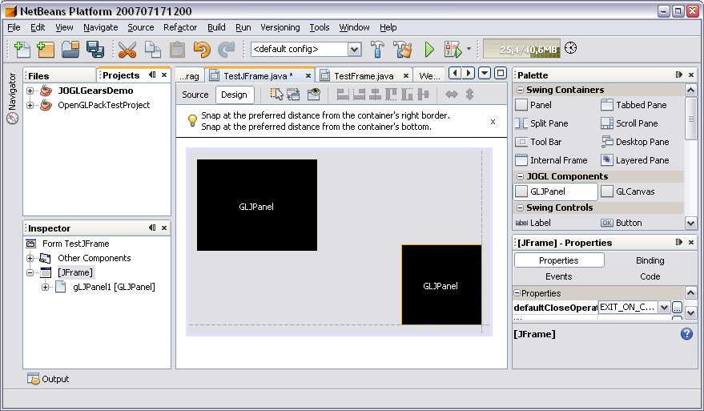

OpenGL Shading Language Compiler/Linker integration and syntax coloring
Compile and Link arbitary shaders

Auto Completion with GLSL doc

JOGL Components now via FormDesigner palette available

Ready to run JOGL Demo Projects and RedBook samples included

OpenGL Capabilities Viewer